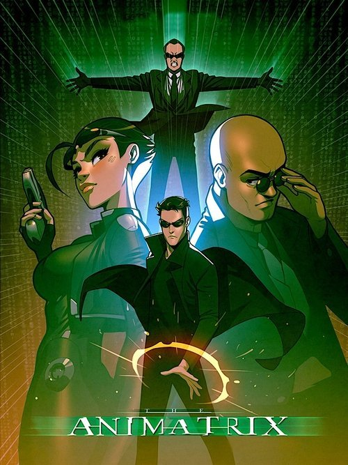

The Animatrix (2003)

Plataforma: Disney+
Puntuación IMDb: 7.6/10
Duración: 9 cortos
Género: Ciencia Ficción, Cyberpunk, Acción
Sinopsis Rápida
Un compendio de historias animadas que exploran el universo de Matrix desde diferentes perspectivas. ¿Qué pasaría si la historia se contara desde el otro lado de la máquina?
Sinopsis Detallada
The Animatrix es una antología de cortos animados que amplían el universo de la trilogía de Matrix. Cada corto ofrece una visión única del mundo de las máquinas y los humanos, explorando temas como la historia de la creación de Matrix, la resistencia humana y la naturaleza de la realidad. La serie presenta estilos de animación diversos, desde el clásico anime hasta la animación digital.
¿Por qué tenés que verla?
- Una perspectiva diferente y enriquecedora del universo de Matrix.
- Diversidad de estilos de animación, cada corto una pieza única.
- Amplía la mitología de Matrix con nuevas historias e ideas.
- Una colección imprescindible para los fans de Matrix.
Idea Extra
Análisis de cada corto por separado, comparando estilos y temas.